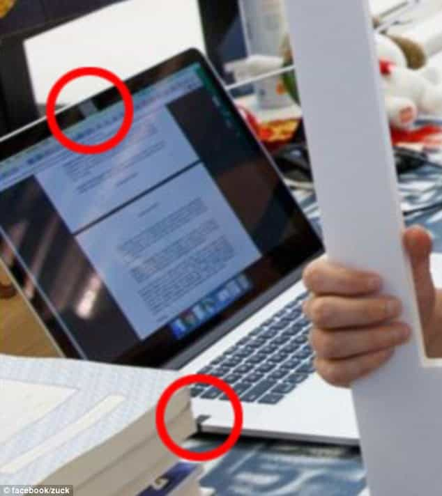

This account syndicates news from other media outlets.


Facebook CEO Mark Zuckerberg appears to be concerned about being spied on.
A photo that he shared to help celebrate Instagram’s 500 million monthly active users shows the camera and audio jack on the billionaire’s Macbook covered with pieces of tape.
In the photo posted on Tuesday, Zuckerberg is sporting a wide smile and his signature gray T-shirt and dark denim jeans.
He’s holding a life-sized Instagram frame that reads: ‘Thanks to everyone in our community for helping us reach this milestone!’

After posting the photo online, several Internet users spotted and pointed out the tape covering his camera and audio jack on his Macbook at his desk.
It’s rumored that skilled hackers are able to take over the front facing cameras on laptops when they’re not covered up.
It appears as though Zuckerberg, who is worth $35.7billion, is trying to prevent that from happening by placing a piece of tape over his camera, making the webcam useless.
Zuckerberg has been previously photographed at the same desk.
Roughly nine months ago while on a tour, he showed off the same desk that’s complete with the same items on it then as it is now, according to Gizmodo.
This isn’t the first time businessman was concerned about his security and privacy.
Back in February he was photographed out on a casual jog while on a trip in Berlin with at least five security guards running alongside him.
Furthermore, Zuckerberg has no less than 16 people who protect him, his wife Priscilla and their daughter Maxima at their $7million Palo Alto, California home.
In five years, the 31-year-old’s company has spent more than $16million protecting him and his family.
The firm disclosed the staggering amount spent on security for Zuckerberg – the fourth richest person in the world – in a regulatory filing back in April.
It reveals that in 2015, $5 million was invested in bodyguards and other protective services to ensure the safety of its founder and CEO.
Read Next: Open Borders Advocate Mark Zuckerberg Building A Fortified Bunker Within His Walled Family Home